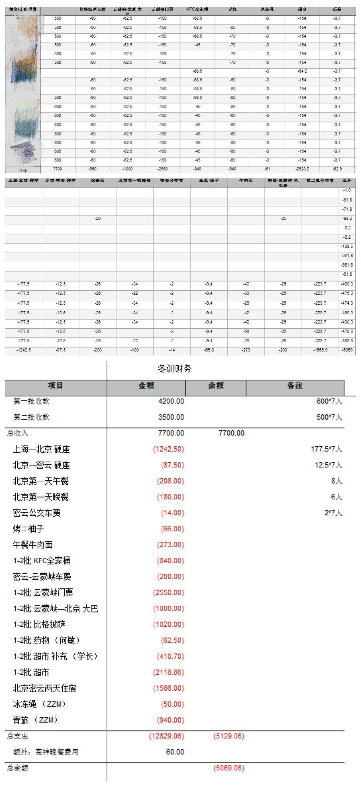

[转寄/推荐][转贴][删除][修改][设置可RE属性][上一篇][返回讨论区][下一篇][回文章][同主题列表][同主题阅读][从这里展开]
发信人: spinor (klein), 信区: outdoor
标 题: 2017 冬训总结—叶苏珊娜
发信站: 饮水思源 (2017年01月28日19:11:06 星期六)
# 财务 #
自己负责的部分—财务和第二批火车票购买。无论什么职务，都多问问老人他们之前怎
么弄得。先讲下火车票购买。第二批一共7人。火车票刚好赶上了春运的时间，所以要进行
抢票。需要提前收集好所有人的姓名、身份证号、手机号，做成通讯录（手机号的收集很
有必要，方便之后的联系）。收集好后提前先登录好12306（我是用飞猪旅行（阿里巴巴）
买的）把每个人的信息提前备入到常用旅客信息里面。抢票开放以后一次性最多买5张票（
但是我有次买了五张票被退了）所以之后7个人，3张一起买，另4张一起买。一共买两个车
票，上海-北京，北京-密云。1.2017.1.14 上海-北京 T110班次 18:02出发 1.15早上9:
30到 耗时15小时半 硬座 177.5元/人2.2017.1.16北京-密云12:20出发13:47到达耗时1小
时27分钟 12.5元/人
终于开始讲财务部分了。钱的事情感觉是最麻烦的。每个人的账目都不一样，一共17个
人一定要算清楚。这次财务报表分成了个人详细报表和总财务报表。先问了问文哥哥每人
先预收多少钱后，向第一批的人每人收了500，第二批每人收了600（因为我们提前一天出
发去了北京玩，会增加了住宿费和饭前）。在收入帐的的时候就要开始写报表，记清楚谁
给了谁还没有给。财务除了自己支出的还要记得记入其他人帮忙支出的金额(住宿费 医药
费)。记账是最重要的，只要有钱支出去了就一定要记得把钱记入报表里面。刚开始记得时
候可以简单的先写一下，支出项目和金额。人的流动性很大所以一定得记得每项支出多少
人，每人多少金额，尽量保留好小票方便核对（小票拿来以后最方便的就是拍张照片记录
一下）。管财务的就是财主，走到哪你都要付钱/偷笑。基本上的在北京和密云的支出是都
可以用支付宝的，所以可以不用多少现金。只需要备小部分大家坐公交的钱就可以了。但
是到了云蒙峡的时候的门票支出是需要现金支付的需要带大量现金。原本文哥哥说带1000
就足够了，LBR突然发出消息还有车费加上第一批门票钱，所以真的真的要带足现金。30/
人 每人5天门票钱 一共17人还要加上200的第二批密云到云蒙峡的包车费。一共2750元现
金。所以多带点现金吧。写个财务报表还是很容易理清所有财务的帐的。可以先向第二批
的预收1000，最后算好账再把钱都退回去就好啦。（当然是因为这次我们的小日子过得不
要太好才导致这样的支出金额的）。
# 训练 #
首先是前期一个月的技术培训＋体能训练，即使忙到爆还要抽空出来训练。之前只是一
直听到LBR和大佬们说培训很重要很重要，同一个动作一直反复的做不要觉得无聊。当时只
是觉得话是很对的，但并没有什么很深刻的感觉。之后真正实践的时候才发现练得那些你
看上去有些无所谓的东西多少重要。到的第一天先练了冰坡的法式和德式上升以及鸭步下
降。第一次明白了什么叫做“道理我都懂”。第一次的实操就发现了自己的很多毛病。好
好穿好安全帽，冰壁真的随时可能落冰下来，它能救你的命。
第二天是去了冰坡大循环，上升下降过节点感觉还是蛮轻松的，之后回来就开始学习打冰
镐。右手至少还是能挥得出搞得感觉，大佬在旁边说了句试试左手，不一样的感觉。左手
个废手，绝对不是自己的/害怕。我一定是有了一只假手。第三四天就开始真正的攀冰的训
练了。教的是教的，道理我都懂。结果自己一上去想的就是怎么爬上去，什么动作什么的
，抛之脑后，就呼呼呼~拉着引体上去。感觉每个人的动作纠正这个还是很有必要的，大家
指出错误，自己注意去攀的时候感觉好了很多很多。多看看自己爬的视频，多改改。
最后两天攀冰的时候大家都越来越熟悉动作什么的了，我自己反而开始有了崩溃的感觉
。在爬到一半的时候感觉全身乏力，打了20几搞，任就打不进去的时候，体验到了什么是
绝望。就算搞没打进去其实靠脚也是能站住的，然而不相信自己的脚，不相信自己的手，
再加上手臂的酸胀感，根本就打不动了，明明就算掉下来也不会有事，但硬是害怕。在上
面第一次有了恐高的感觉，绝望的恐高。我就记得那时候自己一直对谭磊叫我害怕。打不
进去搞，脚又站不住，内心那时候真的很崩溃，说不出的一种感觉。心态一直都不是很好
。后来文哥哥的一句话让我心态放平了很多。“你终于遇到了让你害怕的运动，你就要去
克服它。”
穿冰爪这个事好像是我们的共性问题。第一天穿为了追求速度，结果穿好了以后，实操
的时候才发现自己的鞋子竟然没有完全卡到冰爪里面去。第二天，卡进去了自己带子又没
有系的非常紧，导致整个鞋头都出来了，真的浪费了很多很多的时间去弄冰爪，前期的训
练真的非常的必要，来之前也应该早点把冰爪调试好。再想起打保护，人站在下面不动光
打保护是真的很冷很冷的。一定要做好保暖的措施，时不时就经常的跺跺脚，脚真的会冰
的完全无知觉掉，就像是脚前面放了5个棉花球。
最后一天的速攀真的涨见识了。打稿你就输了/FACEPLAM。最后一次攀冰就这样结束了，
突然就开始很可惜很可惜。攀冰真的是很难得的机会，这次非常遗憾没有让自己精疲力尽
。没有手部的酸胀感，没有脚部的疼痛感，一切都挺好的感觉。没有体验到他们说的精疲
力竭后的倒头就睡，很对不起这次冬训的感觉。真的是要趁任何的空隙去多爬爬线，不要
让线空出来。有人打保护就马上上。
# 生活 #
度过了很幸福很幸福的一周。再次体验了大家庭的魅力，每两天一次早早的起床准备一
天的水。经历一天的攀冰，结束以后大家一起做饭一起睡觉。这样的生活真的很舒心，也
遇到了一群暖心的人。回来男女分工，赵和学长就去打水，高飞劈柴烧火，谢煮果珍，我
和周卓玛做饭，舒琴和胡皓月轮流一个和我一起做饭一个烤装备。真的很简单的生活却很
幸福的感觉。一句做好饭了，大家围过来一起吃饭的幸福。第一次经历的零下10度，水放
在那里就会结冰。手机遇冷就会自动关机。手机暖宝宝的VIP服务。睡醒的时候发现自己的
脚有些肿胀了，竟然连高山靴也穿不进去了，穿鞋真的痛苦，只能把袜子再脱掉穿。睡觉
之前整个脚掌的底是动不了的，整个脚都是硬的，只能用手去掰自己的脚，让他活动活动
，这种微妙的感觉真的可以体验体验。
# 感悟 #
冬训刚开始的时候真的就是抱着好玩想要尝试的心态过去的。最后会发现这是一种责任
的开始。要对自己要对别人的生命负责，要对协会负责。写这篇距离冬训太久了。总结的
时候记得最牢的就是，在野协感觉一直都在汲取，技术，装备，训练。因为有协会让我了
解到了很多很多新的东西。但感觉自己也没有为协会做出点什么过。自己也应该思考思考
自己能为协会做些什么，做什么之前也都是先强壮自己吧。训练无疑是必须跟上的，平时
协会最多的是出线，多把自己学到的交给下面的小朋友，希望自己之后出线也能多帮上忙
。很感谢这么多年，各个大佬把协会经营的很好，才让我们有了冬训，有了出线的机会。
# 行诸山野 立命天地 ——野协 #
 screen.width - 200){this.width = screen.width - 200}">
|
[转寄/推荐][转贴][删除][修改][设置可RE属性][上一篇][返回讨论区][下一篇][回文章][同主题列表][同主题阅读][从这里展开]